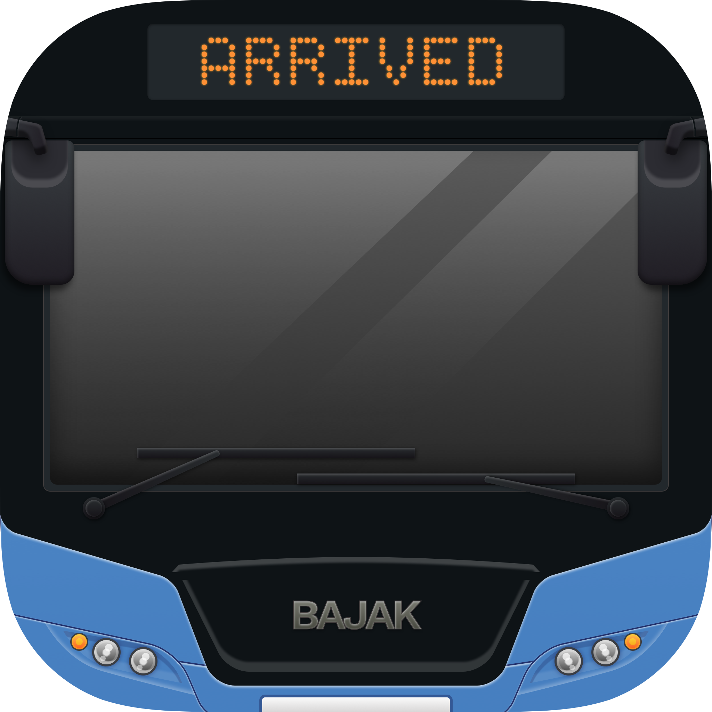

BaJak App
TransJakarta Estimated Time of Arrival (ETA)
Problem
Waktu tunggu penumpang yang tidak pasti menimbulkan kecemasan, sehingga membuat orang resistan untuk naik transjakarta.
Waktu yang tidak pasti dalam menunggu bus menambahkan faktor yang membuat keputusan untuk naik TransJakarta jadi opsi paling akhir.
Penumpang merasa menunggu dengan tidak pasti menurunkan produktivitas dan tidak efisien.
Transjakarta belum menjadi pilihan utama orang untuk commuting.
Solution
Informasikan ke penumpang estimasi kedatangan bus, sehingga penumpang mampu melakukan pengambilan keputusan dan perencanaan untuk menggunakan TransJakarta.
Dengan banyaknya demand untuk naik TransJakarta, diharapkan perbaikan layanan dari sisi lainnya akan terjadi secara lebih cepat.
WHY NOW?
Maraknya layanan transportasi personal swasta (Gojek, Grabbike, & Uber) yang aksesnya semudah orang melakukan order via smartphone.
Transportasi publik bisa dibilang kalah pamor, namun itu juga berarti penumpang siap dengan layanan transportasi publik yang accessible via smartphone karena penetrasinya sangat tinggi
HOW?

Target User
Pemakai transjakarta pada umumnya,
commuter (orang yang secara rutin pulang-pergi ke tempat tertentu di jakarta) pada khususnya
COMPETITOR
| BaJak | AppAja | Qlue | |
|---|---|---|---|
| Solusi yg fokus | |||
| Full access ke API | |||
| Platform | iOS | Android | Android, iOS |
| Moda transport | TransJakarta | Transportasi publik termasuk TransJakarta dan Kopaja | TransJakarta |
PROFIL TIM BaJak
Arie Aulia Nugraha
UX Designer
Doni Ramadhan
iOS Developer
Arganka Yahya
UX Designer
POTENTIAL
“For years there has been a theory that millions of monkeys typing at random on millions of typewriters would reproduce the entire works of Shakespeare. The Internet has proven this theory to be untrue.”
BaJak App
TransJakarta Estimated Time of Arrival (ETA)